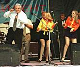
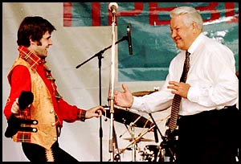

Page index / courses
1990-2000
1990-1999
The August Coup and the fall of Gorbachev:
The fall of the Soviet Union
American TV news broadcasts about the coup
Background on the coup
An hour by hour chronicle of the coup
Boris Yeltsin
Background on Yeltsin

-Alexander Zemlianichenko

-Alexander Zemlianichenko
1993 coup
Candidates in the 1996 presidential elections
Start II negotiations
1997 New Year's Address
Russian Politicians